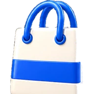
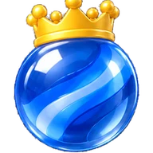
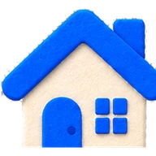
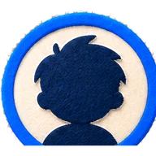
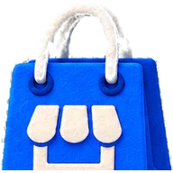
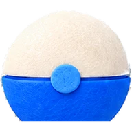
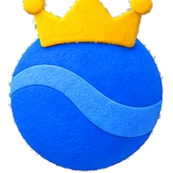
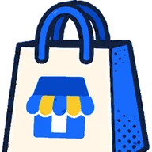

앞의 다섯을 폐기하고 부품을 그리는 것부터 다시 만들었다. 색은 이 게임의 키아트에서 뽑았고
(주인공의 코발트 #176AFB, 반바지의 마리골드 #FACA28), 아이콘 열두 개는 시안마다
같은 세계의 재질로 새로 렌더했다. 셋 다 최소 탭 56 · 주 동작 64 · 최소 글자 12 · 캐릭터 가로 56%/세로 36%를
지키고, tools/ui-check.mjs가 이를 검사한다.
| 재질 | 내비게이션 | 서체 | 깊이 | |
|---|---|---|---|---|
| A 골목 대장 | 3D 토이 · 광택 | 레일 / 독 | Jua + Gothic A1 | 6px 밑모서리 |
| B 종이 공작 | 펠트·색지 · 매트 | 위쪽 탭 줄 | Gaegu + Gothic A1 | 층과 그림자 |
| C 만화 컷 | 잉크 선 · 하프톤 | 컷 띠 | Black Han Sans + Gothic A1 | 오프셋 단색 |
이 게임의 아트에서 그대로 걸어 나온 밝은 3D 토이. 모든 부품을 같은 재질·같은 광원으로 렌더해서, UI가 캐릭터와 같은 세계의 물건이 되게 한다.


도톰한 색지와 펠트를 오려 붙인 판. 광택이 없고, 층과 매트한 그림자로만 깊이를 만든다. 화면이 「앱」이 아니라 도영이가 만든 물건이 된다.





화면은 만화 한 페이지다. 컷과 홈통이 격자이고, 말풍선이 카드를 대신하며, 명암은 하프톤 점으로만 준다.

번호만 알려 주면 그 기준이 render/theme.ts와 컴포넌트 규격이 되고, 화면 13개가 그 위에서 다시 그려진다.